داستان پیرامون کودک یتیم یازده سالهای به نام هری پاتر است که یک جادوگر میباشد و در دنیای معمولی در کنار خاله، شوهرخاله و پسرخالهاش در کنار ماگل ها (غیر جادوگران) زندگی میکند. توانایی او ذاتی است و کودکانی مانند او برای کسب آموزش لازم برای موفقیت در دنیای جادوگری به مدرسه هاگوارتز دعوت میشوند. هری به عنوان دانشآموز وارد مدرسه سحر و جادوگری هاگوارتز میشود و اتفاقات داستان از آنجا شروع میشود. هری تا دوران رشد و بلوغ در آنجا پرورش مییابد و با مشکلاتی مواجه میشود؛ مانند: جادوگری، روابط اجتماعی و عاطفی، چالشهای نوجوان عادی مانند دوستی و امتحاناتی که به او اجازه راحتی نمیدهند و از همه مهمتر آمادهسازی برای تقابل با مشکلاتی که پیش رویش است
خلاصهای از ساختار کلی داستان بدینگونه است که هری پاتر پسر یک مادر و پدر جادوگر است که آن دو هنگام یک سالگی او توسط «لرد ولدمورت» خبیث کشته شدهاند. اما او به دلیل اینکه مادرش در مقابل لرد ولدمورت از خود گذشتگی کرد، در برابر نفرین مرگبار ولدمورت زنده میماند و این نفرین فقط زخمی صاعقهمانند بر پیشانیاش به جا میگذارد که در واقع این زخم به گونهای است که لرد ولدمورت وقتی که در حال کشتن مادر هری بوده است، به اینگونه چوبدستیاش را حرکت داده است. هری با خاله و شوهرخالهاش که هیچکدام جادوگر نیستند و در اصطلاح مشنگ (Muggle) نامیده میشوند، بزرگ میشود و از گذشته خودش اطلاعی ندارد تا اینکه در سن یازده سالگی وقتی نامه پذیرش از مدرسه علوم و فنون جادوگری هاگوارتز را دریافت میکند، متوجه میشود که دنیای دیگری در همان دنیای عادی مشنگها وجود دارد که او در آنجا به دلیل زنده ماندنش از چنگ لرد ولدمورت بسیار مشهور است. هر کدام از کتابهای هری پاتر در واقع به ماجراهای یک سال او در دنیای جادوگری و مدرسه محبوبش میپردازد. او در آن مدرسه دوستان خوبی مثل رون ویزلی و هرماینی گرنجر پیدا میکند و همچنین در طی کتابها بیشتربا گذشته خودش آشنا میشود و همواره مورد لطف و حمایت مدیر مدرسه آلبوس دامبلدور قرار میگیرد. بر اساس یک پیشگویی که در سال پنجم از طریق یکی از معلّمها به هری گفته میشود، یا هری باید «وُلدمورت» را از بین ببرد یا «ولدمورت» باید هری را از پیش رو بردارد و هیچکدام با وجود دیگری قادر به زندگی نخواهند بود و سیر صعودی داستان هم بر همین اساس است و هر دو شخصیت به دنبال از بین بردن یکدیگرند.
مجموعه کتاب های هری پاتر به نوشته ی ج.ک.رولینگ دارای هفت مجموعه است که نام آنها به ترتیب عبارت اند از : 1)هری پاتر و سنگ جادو. 2)هری پاتر و تالار اسرار. 3)هری پاتر و زندانی آزکابان. 4)هری پاتر و جام آتش. 5)هری پاتر و محفل ققنوس. 6)هری پاتر و شاهزاده دو رگه. 7)هری پاتر و یادگاران مرگ.
برای دانلود عکس های هری پاتر اینجا کلیک کنید
برای دریافت اطلاعات بیشتر کلیک کنید
| name | personality | group | photo |
|---|---|---|---|
| Harry Potter | + | gryffindore | 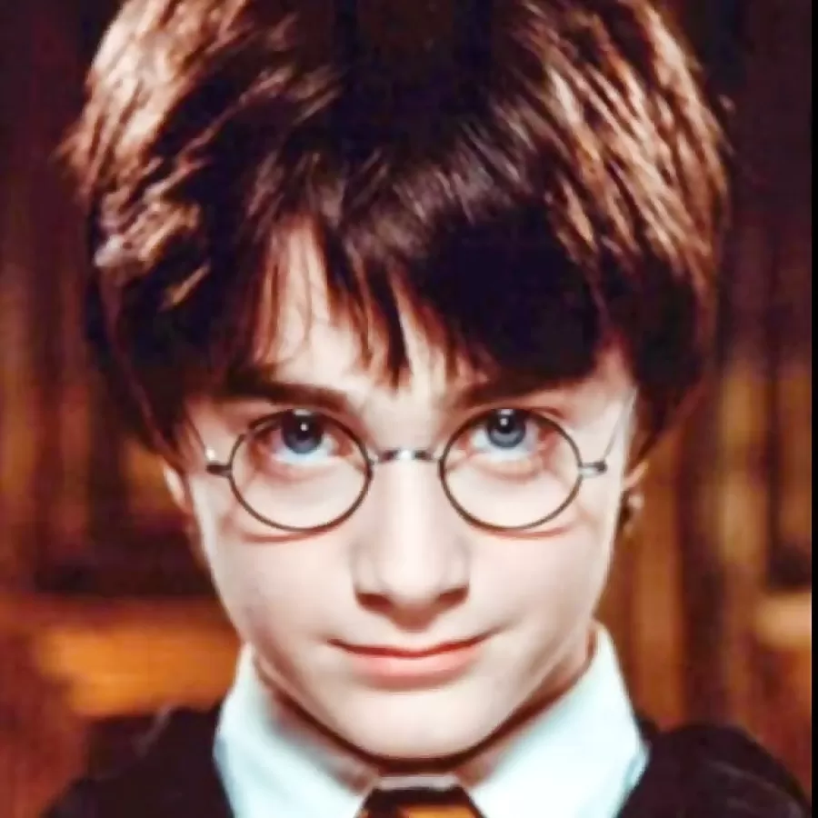 |
| Hermione Granger | + | gryffindore | |
| Ron Weasley | + | gryffindore | 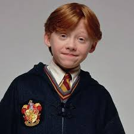 |
| Draco Malfoy | - | Slytherin | 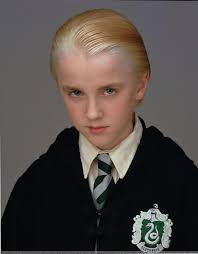 |
| Fred and George Weasley | + | gryffindore | |
| Ginny Weasley | + | gryffindore | 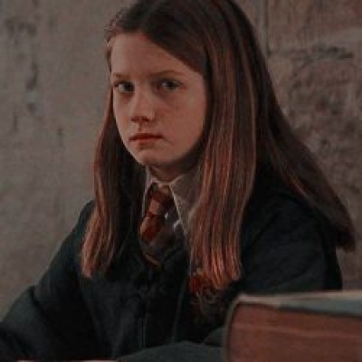 |
| James Potter | + | gryffindore | 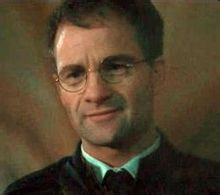 |
| Lily | + | gryffindore | 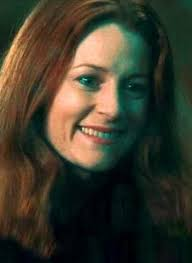 |
| Severus Snape | + | Slytherin | 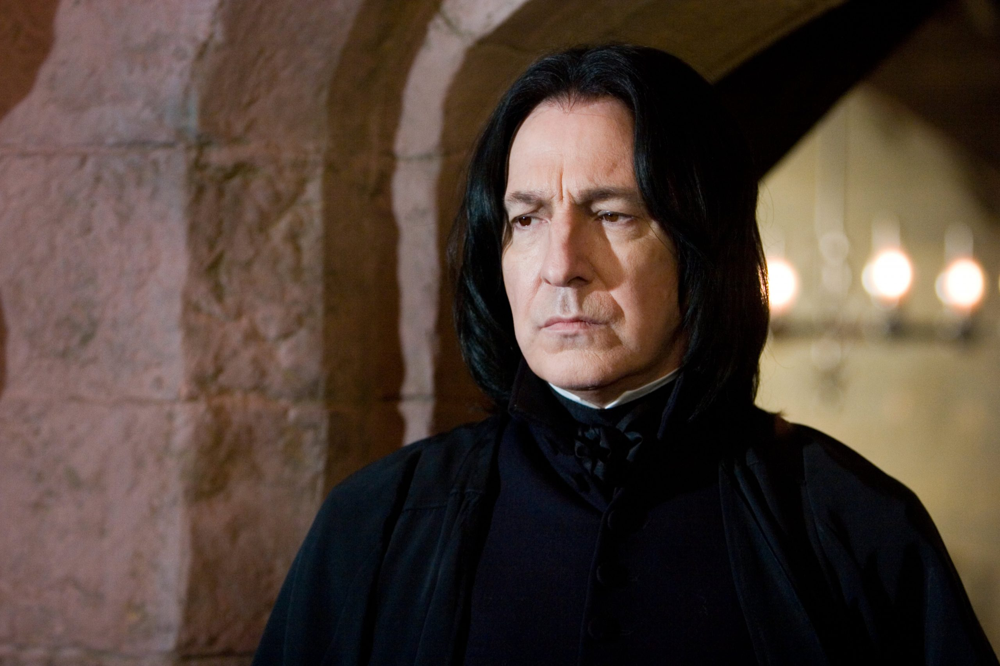 |
| Albus Dumbledore | + | gryffindore | 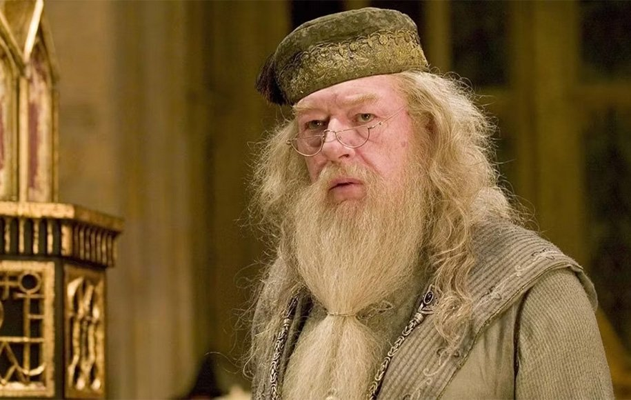 |
| Voldemort | - | Slytherin | 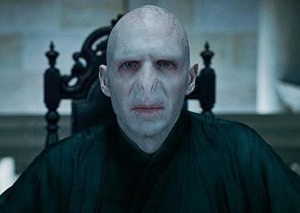 |
| Flitwick | + | Ravenclaw | 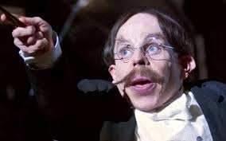 |
| McGonagall | + | gryffindore | 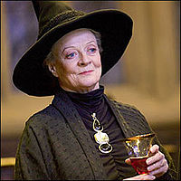 |
| Neville Longbottom | + | gryffindore | 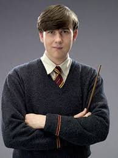 |
| نام | پایه گذار | حیوان | رنگ | المان | روح | اتاق مشترک | عکس |
|---|---|---|---|---|---|---|---|
| گریفیندور | گادریک گریفیندور | شیر | سرخ و طلایی | آتش | نیک تقریباً بی سر | برج گریفیندور | 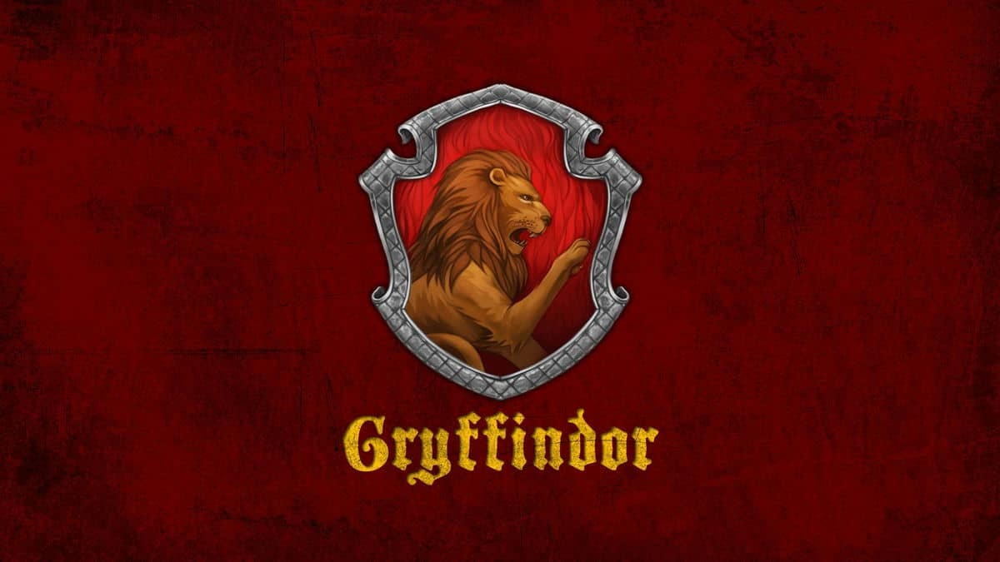 |
| اسلیدرین | سالازار اسلیدرین | مار | سبز و نقره ای | آب | بارون خونین | سیاه چال اسلیدرین | 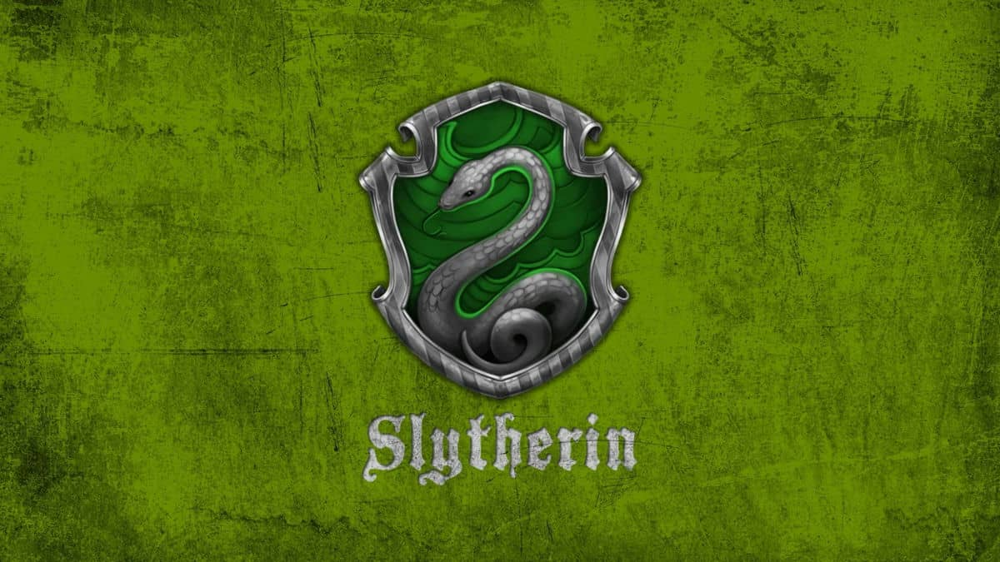 |
| ریونکلا | رویینا ریونکلا | عقاب | آبی و برنزی | هوا | بانوی خاکستری | برج ریونکلا | 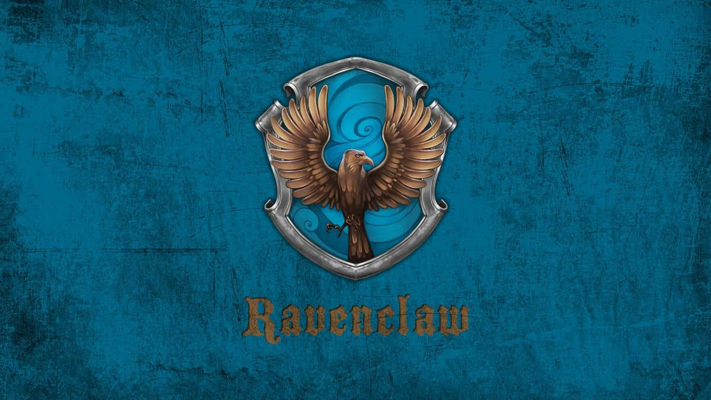 |
| هافلپاف | هلگا هافلپاف | گورکن | زرد و سیاه | زمین | راهب چاق | زیر زمبن هافلپاف | 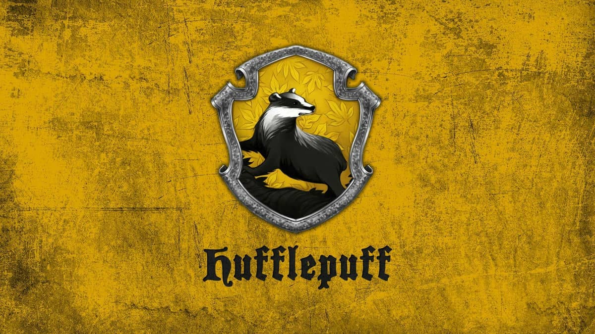 |
:پوشاک لازم برای دانش آموزان سال اول
خواهشمند است توجه داشته باشید که پوشاک همه ی شاگردان می بایست برچسب اسم داشته باشد